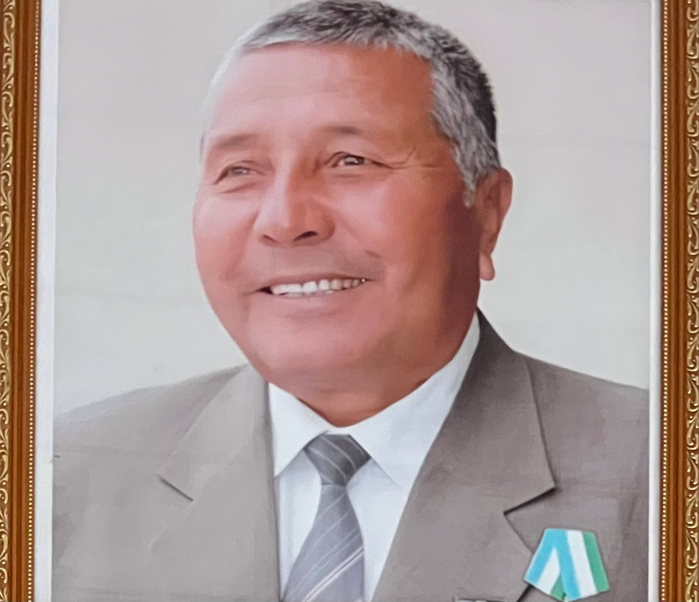
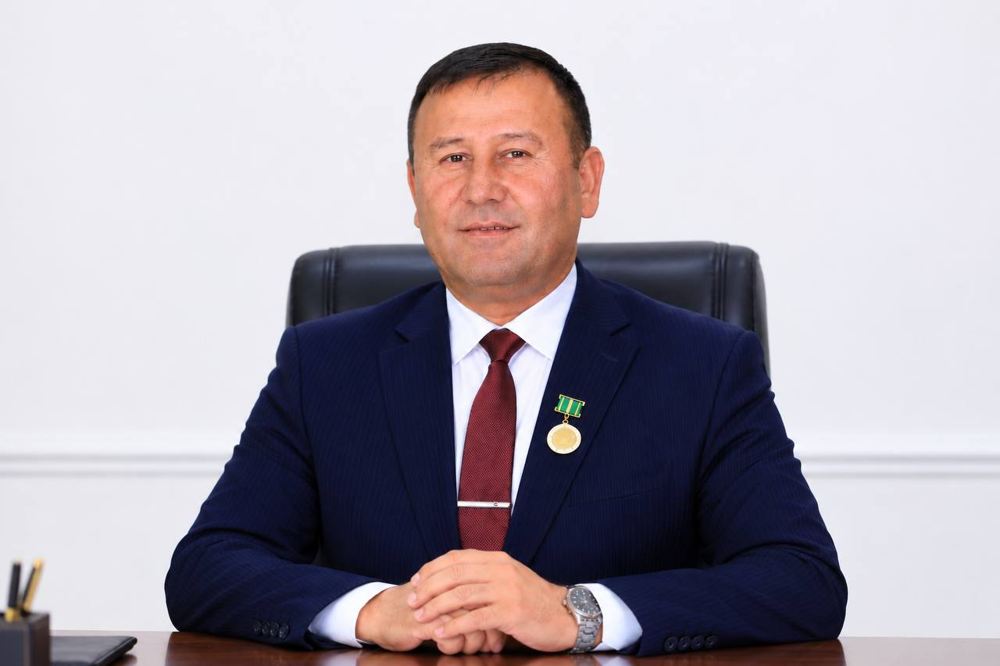

Maktab asoschisi
To‘xtamurod Jumayev
1991-yilda Yosh matematiklar va fiziklar maktabiga asos solgan tajribali ustoz. “Qorako‘lcha o‘qitish uslubi” shakllanishida beqiyos hissa qo‘shgan.

1991-yilda Yosh matematiklar va fiziklar maktabiga asos solgan tajribali ustoz. “Qorako‘lcha o‘qitish uslubi” shakllanishida beqiyos hissa qo‘shgan.

Litsey jamoasini zamonaviy ta’lim va yuqori intizom asosida boshqarib, o‘quvchilarning olimpiada hamda fan yutuqlarini izchil mustahkamlab kelmoqda.

Har bir o‘quvchi bilan individual ishlaydigan, kechki guruh mashg‘ulotlari va olimpiada tayyorgarligini yuqori saviyada olib boradigan fidoyi ustozlar.
Akademik litseyga hujjat topshirish rasmiy my.edu.uz portali orqali onlayn tarzda amalga oshiriladi.
my.edu.uz saytiga o‘tish →BuxDU Qorako‘l akademik litseyida quyidagi 4 ta yo‘nalish bo‘yicha qabul kvotalari belgilangan:
| № | Yo‘nalish | Kvota |
|---|---|---|
| 1 | Aniq fanlar | 104 ta o‘quvchi |
| 2 | Tabiiy fanlar | 52 ta o‘quvchi |
| 3 | Ijtimoiy va gumanitar fanlar | 52 ta o‘quvchi |
| Jami | 208 ta o‘quvchi | |
Yosh matematiklar va fiziklar maktabi nomi bilan 1991 yilda ustoz To’xtamurod Murtazoyevich Jumayev tashkilotchiligida ish boshlagan bilim dargohi ta`lim-tarbiyadagi o`ziga xos uslubi bilan “Jahonga yuz tutgan maktab” bo’lib dong taratdi va 2009 yildan Buxoro davlat universiteti Qorako`l akademik litseyi maqomini olib yurtimizga tanildi. Bu maktab jamoasi bugungi kunga kelib respublikamizda “Qorako`lcha o`qitish usuli”, “Qorako`l maktabi” kabi til bibliklari bilan keng yoyilishi uchun beshik bo`lgan jamoa hisoblanadi. Jamoa ustoz To’xtamurod Jumayevning tadbirkorligi, rahbarlik mahorati mahsuli sifatida ulkan zafarlarni qo’lga kiritdi va ayni chog’da Ustozning shogirdi, zamon bilan hamnafas, ilg’or fikrlar egasi G’olibjon Jumaqulov rahbarligida yutuqlarni yanada ko`paytirib, mustahkamlab, obro`-e`tiborini orttirib bormoqda. Hozirgi kungacha respublikamiz fan olimpiadalarida 54 ta imtiyozli diplom qo’lga kiritildi. Jahon va xalqaro fan olimpiadalarida qatnashgan 90 nafardan ortiq o’quvchilarimiz 1 ta oltin, 15 ta kumush va 31 ta bronza- jami 47 ta medalni,ko’plab o’quvchilar diplomlarni qo’lga kiritdilar va dunyoda o’zbek farzandlarining hech kimdan kam emasligini ko’p bor tasdiqladilar.Donolar izidan borishni o`ziga shior qilgan jamoa har bir ishni aniq va puxta reja asosida qilishga odatlangan. Bu ishda jamoa boshlig`i G`olibjon Jumaqulovning bilimdonligi va bamaslahat ish ko`rishi qo`l kelmoqda. Ishning samarasi esa natijalarda o`z tasdig`ini topmoqda.Jamoaning har bir a`zosi bilim oluvchilarga e`tiborli bo`lib, belgilangan kun tartibi asosida o`quvchilarning to`g`ri o`sib-ulg’ayishi uchun har bir ishga mas’uliyat bilan yondashmoqdalar. Prezidentimiz Sh. Mirziyoyevning “Yoshlarimizni doimo yangicha fikrlash, o’ylash va yashashga o’rgatishimiz kerak” degan so’zlari o’zining amaliy isbotiga ega bo’lmoqda.“Ba`zi ota-onalar: “Farzandimizning boshqa joyda bo`lganidan ko`ra shu litseyda bo`lgani yaxshiroq, ko`nglimiz to`q va xotirjam bo`lamiz, bu yerda tartib- intizom, ovqatlanish va e`tibor juda yaxshi”,- deyishadi. Bu gaplar bejizga aytilmaydi, albatta, xalq ishonchini qozonish qiyin, lekin yillar davomidagi mashaqqatli mehnat evaziga erishilgan ishonchni saqlab qolish esa juda mashaqqatlidir”,- deydi litsey direktori G`. Jumaqulov. Litseyda o`quvchilarning kunlik vaqti to`g`ri taqsimlangani uchun undan maksimal darajada ijobiy yo`lda foydalanish imkonini bermoqda.Har kun ertalab soat 6:00 da uyqudan turish va 40 daqiqa davomida badantarbiya mashqlari bilan shug`ullanish, so`ng yuvinish va 7dan 40 daqiqa o`tganicha ovqatlanish, 8:00 dan 14:20 gacha dars mashg`ulotlarida qatnashish, darsdan so`ng sport o`yinlari, musobaqa va ommaviy tadbirlarda qatnashish ,kitob o`qish , qo`shiq tinglab dam olish, soat 16:00 dan 17:20 gacha guruh mashg`ulotlarida maxsus fan o`qituvchilari rahbarligida qatnashish, soat 18:00 gacha dam olish, 18:45 gacha kechki ovqatlanish, 19:00 dan 22:00 gacha kechki tarbiyachilari nazoratida uy vazifalarini bajarish va o’zlarini qiziqtirgan savollariga javob izlash, soat 23:00 dan ertalab 6:00 gacha kechki uyqu- o`quvchining bir kunlik vaqti ana shunday taqsimlangan. Bunda, albatta, “o`quvchining bo`sh vaqti dushmanning ish vaqti” hikmatli so`ziga amal qilingan. Odatda, hozirgi paytda yoshlar orasida jinoyatchilikning ko`payishi, ularning kattalar e`tiboridan chetda- bekorchi bo`lib qolishidan kelib chiqmoqda. Bizning litseyda esa shunday kamchilikning oldi olingan.Litseyda ishning to`g`ri tashkil qilingani muvaffaqiyatlar kaliti bo`lib xizmat qilmoqda. Har haftada ikki marta olimpiadachi o`quvchilar bilan mashg`ulotlar olib borish, ularning fan sirlarini chuqur egallashlariga imkon bermoqda. Bunda jonkuyar fan o`qituvchilarining mehnati alohida e`tiborga loyiqdir. Natija esa mehnatga yarasha bo`lmoqda. Keyingi besh yillikni e`tiborga olsak, respublika fan olimpiadasi va tanlovlarda 10 ta diplom, jahon va xalqaro fan olimpiadalarida 12 ta medal va diplomning qo`lga kiritilgani so`zimizning isbotidir.2016 yilda fan olimpiadasining IV respublika bosqichida matematika fanidan Yaxshiyev Jamshid II darajali diplom, “Ilmgohim - iftixorim” respublika ko’rik-tonlovida fizika fanidan Nurmonov Sirojiddin I darajali diplom, matematika fanidan Abduqayumov Abdumalik II darajali diplom bilan taqdirlandi.2017 yil Toshkent shahrida o’tkazilgan Lomonosov olimpiadasida matematika fanidan Abduqayumov Abdumalik kumush medalni qo’lga kiritdi, IV bosqich respublika olimpiadasida esa I darajali diplom bilan taqdirlandi.2018 yilda IV bosqich respublika olimpiadasida ona tili va adabiyot fanidan Askarova Maftuna va biologiya fanidan Iskandarova Zebo II darajali diplomga ega bo’ldi.2019 yilda matematika fanidan Mirzayev Nodirjon III darajali diplomni qo’lga kiritdi.2019 yil oktyabr oyida biologiya fanidan respublika miqiyosida Jizzax viloyatida o`tkazilgan Abu Ali Ibn Sino olimpiadasida 2-bosqich talabasi Karimov Ravshanbek I darajali diplomni egallab, 22300000 so`m pul mukofotini, ustozi G`oyibova Dilbar 18955000 so`m pul mukofotini qo’lga kiritdi.Buxoro viloyatida respublika bo’yicha matematika fanidan o`tkazilgan Mirzo Ulug`bek nomidagi olimpiadada 2-bosqich o`quvchisi Hasanov Shaxboz G`olibjon o`g`li II darajali diplomni egallab 18955000 so`m pul mikofoti, ustozi Hidoyatov Iftixor 14495000 pul mukofoti bilan taqdirlanishi barchamizni quvontirdi.Xalqaro olimpialarda erishilgan yutuqlar salmog’i yanada yuqoridir.2017 yil Abduqayumov Abdumalik matematika bo`yicha Qozog`iston va Brazilyada 2 ta kumush medalga, Nurmonov Sirojiddin fizika fani bo`yicha Qozog`istonda kumush medalga, Tailandda diplomga ega bo`lib qaytishdi.2018 yilda matematika fani bo`yicha Qozog`istonda otkazilgan olimpiadada Abdullayev Salimxo`ja kumush medal, Imomov Jasur, Toshpolatov Elbeklar bronza medali bilan taqdirlandi.2019 yil uzoq kutilgan oltin medalni Qozogistonda otkazilgan matematika olimpiadasida Sayliyev Abbos qo’lga kiritgan bo’lsa, Imomov Jasur va Toshpo’latov Elbek kumush medalni, Abdullayev Salimxo’ja bronza medalni qo’lga kiritdi. Buyuk Britaniyaning London shahrida otkazilgan jahon olimpiadasida Imomov Jasur bronza medalga ega bo’lib barchamizni suyuntirdi.2020 yil Qozog`istonda otkazilgan matematika olimpiadasida Hasanov Shaxboz muvaffaqiyatli qatnashib bronza medalga ega bo`ldi va litseyimizning medallar shodasini boyitdi.Shu o’rinda e’tiborga molik bir haqiqat diqqatimizni tortadi. O’zi litsey jamoasi a’zosi bo’lib, mashaqqatli mehnat bilan birgalikda farzandini olimpiada g’olibi bo’lishga undagan, unga ustozlik qilganlarga har qancha havas qilsak arziydi. 2005 yil matematika fani bo’yicha olimpiadaning respublika bosqichi g’olibi Jahongir Mirzoqulovning otasi Oltin Mirzoqulov, 2008 yilda Ispaniyada o’tkazilgan jahon matematika olimpiadasida bronza medal egasi Sherzod Safoyevning otasi Jumanazar Mustafoyev, 2019 yilda Buxoro shahrida o’tkazilgan Mirzo Ulug’bek nomidagi respublika olimpiadasida II darajali diplom va 2020 yil Qozog`istonda o’tkazilgan matematika olimpiadasida bronza medalga ega bo’lgan Hasanov Shaxbozning otasi G’olibjon Jumaqulov o’rnida bo’lishni kim istamaydi deysiz. Har bir sinfga qabul qilingan o`quvchilar bilan yaqindan ish olib borish guruh rahbari va fan o`qituvchisining asosiy maqsadi bo`lmog`i lozim. O`qituvchilarni o`quvchilarning o`zlari tanlashi ixtiyoriy bo`lgani uchun bilim darajasi yuqori bo`lgan o`quvchini o`qitish oson kechmaydi, albatta. Agar o`quvchi ko`ngliga yo`l topolmas ekan xoh guruh rahbari, xoh fan o`qituvchisi bo`lsin ko’zlangan maqsadga erishib bo’lmaydi. Shunday ekan akademik litseyda o`qituvchi bo`lib ishlashni barcha o’qituvchilar ham eplay olmaydi. Demak akademik litseyga o`qituvchilar ham yuqori darajadagi tanlov asosida qabul qilinadi va o`qituvchidan doimiy ravishda o`z ustida ishlashi, zamonaviy bilim va o`qitish usullarini o`rganib borishi talab etiladi. Elu-yurt manfaati yo’lidagi ezgu amallarni umrining mazmuni deb bilgan bunday o’qituvchilar haqiqiy ustozlardir. Ilm dargohi tashkil topganidan shu kungacha fizika fani o’qituvchisi va uzoq yillar davomida direktorning ilmiy ishlar bo’yicha o’rinbosari lavozimida ishlab kelayotgan Ne’mat Bozorov, o’qituvchilardan Karomat Hamdamov, Saodat Tursunova, Fazilat Ashurova, Dildora Hikmatova, Hamid Eshmurodov, Matluba Boboyevalar shunday ustozlardan hisoblanadi.Olimpiadachi o`quvchilar bilan ishlash alohida bilim, tajriba va mas’uliyat bilan yondashuvni talab etadi. Olimpiadaga qatnashishni istagan o’quvchilar bilan har haftada ikki marta mashg`ulot o`tish bilan birga, vaqti-vaqti bilan o`tkazib turiladigan litsey olimpiadasiga alohida e`tibor qaratiladi. O`qituvchi-hakamlar biron o`quvchiga yon bosishiga yo`l qo`ymaydi. Toki barcha o`quvchi bir-birini tan olib rozi bo`lgunucha olimpiada qayta o`tkazilaveradi. Shundagina ochiqchasiga “aql jangi” bo`ladi va o`quvchilarning olimpiada g’olibi bo’lishga ishtiyoqi ortadi. Olimpiadachi o`quvchilarni adabiyotlar bilan ta’minlash, savollarga to`liq javob topishida ularga ko`maklashish fan o`qituvchisining zimmasidagi muhim vazifalaridan biri hisoblanadi. Shuning uchun ham bunday oqituvchi alohida hurmatga sazovordir.Akademik litseyda o`quv jarayonidagi yutuqlar ildizini, avvalo, qabul va qabulgacha ko`riladigan tayyorgarlikdan qidirmoq lozim. O`quv yili davomida har oyning oxirgi yakshanba kuni litsey o’qituvchilaridan bir guruhi uchun dam olish emas, balki fidokorlik namoyish qilinadigan kunlardan biri hisoblanadi. Shu kuni 600-800 nafar litseyga kirishni xoxlagan o`quvchilar o`zlari istagan ta’lim yo`nalishi bo`yicha 3 ta fanga doir bilimlarini sinovdan o’tkazadilar. Sinov savollarini litsey o’qituvchilari umumta’lim maktablarining darsliklari asosida tuzib o’quvchilarga tarqatishadi. Savollarga javob yozish uchun uch soat vaqt beriladi. Javoblar tayyor bo’lgach ularni litsey o’qituvchilari tekshirib, baholab, yig’ilgan ballarni e’lon qilishadi. Bu ishda litseyning ilg’or o’quvchilari ustozlariga yaqindan yordam berishadi. Sinov yakunida tuzilgan ro’yxat asosida o’quvchi o’zining tengdoshlari orasidagi o’rnini aniqlab oladi.Buyuk bobokolonimiz Amir Temurning “Adolat har ishda hamrohimiz va dastumiz bo’lsin!”- degan hikmatli so’ziga amal qilgan holda o’tkaziladigan qabul imtihoni har bir yo`nalish uchun belgilangan bir kunda erta tongdan kechgacha davom etadi. Tong soat 6:00 da fan o`qituvchilari navbatchi ota onalar nazorati ostida litsey binosiga kelib soat 8:00 gacha belgilangan test topshiriqlarini tuzadi. Test sirliligi saqlangan holda o`quvchilarga yetkaziladi va o`qituvchilar nazorati ostida imtihon olinadi. Yig`ib olingan javoblar varaqlarini shifrlangan holda ota-onalar nazorati ostida fan o`qituvchilari tekshirishadi. Ballar aniqlanadi, o`quvchilarga apellyatsiya qilish imkoni beriladi. Barcha muammolar hal bo`lgach litseyga qabul qilngan o`quvchilar ro`yxati e`lon qilinadi. Bu jarayondagi shaffoflikka hech kimda e`tiroz bo`lmaydi. Qabulda tanish bilishchilikka butunlay barham berilgan.Guruh rahbari o`quvchilarning o`quv dargohidagi eng yaqin kishisi bo`lmog`i va birinchi kundanoq guruh o`quvchilarining muammo va qiziqishlarini o’rganib, litsey ruhshunosi va yoshlar yetakchisi bilan hamkorlikda targ`ibot va tashviqot ishlarini amalga oshirishi lozim. Birinchi prezidentimiz I.A.Karimov aytganlaridek «Ta`limni tarbiyadan, tarbiyani ta`limdan ajratish mumkin emas». Qabul qilingan o`quvchi yoshlarni litseyning ichki tartib intizomi va qat’iy talablariga ko`nikishlari uchun barcha shart-sharoitlar yaratilgan. Guruh rahbarlari o`quvchilarning tashvishi bilan yashasa o`z farzandiday ko`rib, talabchan va mehribon bo’lsa, bu ustoz hurmarga loyiqdir. Shunday ustozlarga Mustafoyev Jumanazar, Jumayeva Gulnora, G`oyibova Dilbar, Jumayev Jahongir, Hidoyatov Iftixor, Boboyev Durmamat, Fayziyev Rahim, Beshimov Akmal, Xo`jayeva Dilfuza, Axmedova Norbibish, Sulaymonov Shuhrat, Jumayev Erkin, Mirzaqulov Oltin va marhum Xolniyozov Sa`dulla kabi ustozlar nomini qayd qilish mumkin.Kechki tarbiyachilik ishi o`quvchilar tartib intizomini to`g`ri yo`lga qo`yishda asosiy omillardan hisoblanadi. Ular ota-ona o`rnini bosadigan, o`quvchilar ichki dunyosi bilan yaqindan tanishib, guruh rahbarlari va litsey rahbariyati bilan yaqin aloqada bo`ladigan, tarbiya jarayonining ajralmas qismi hisoblanadi. Bu borada o’z mehnati bilan Oltin Mirzoqulov, Erkin Jumayev, Sarvar Hasanov, Bekniyoz Rajabov, Zoira Umarova, Guliruh Husenovalar o`quvchilar ko`nglidan chuqur joy olganlar.Akademik litseyda har haftada 6 kun o`qish bo`ladi. Har dushanba ertalab soat 9.00 o`quvchilar hovlida guruh rahbarlari boshchiligida saflanadilar.Akademik litsey rahbariyati tomonidan o`tgan hafta yakunlari, yutuq va kamchiliklar, davomat masalasi aytiladi, g’oliblar rahbariyat tomonidan taqdirlanadi, xatoga yo’l qo’yganlarga uni tuzatish yo’llari korsatib o’tiladi. Boshlanayotgan o’quv haftasida mo’ljallangan vazifalar e’lon qilinadi. Har ikki haftada bir marta barcha o`qituvchi va tarbiyachilar ishtirokida direktor oldi yig`ilishi o`tkazilib, o’tgan vaqt davomidagi yutuq-kamchiliklar muhokama qlinadi va navbatdagi vazifalar belgilanib, topshiriqlar beriladi.Akademik litseyda har oyning oxirgi chorshanbasida barcha o`qituvchilar nazorati ostida o`quvchilar uchun blok testlar olinadi. Testlarni fan o`qituvchilari tuzishadi va blok test o’tkazish mas’ul guruhiga yetkazib qo’yishadi yoki shartnoma asosida DTM testlaridan foydalaniladi. Bunday hollarda test javoblarini DTM ning o’zi tekshirib beradi. Test natijalari bir hafta ichida tekshirib tahlil qilinadi va yo’nalishlar kesimida natijalar e’lon qilinadi. G’oliblar taqdirlanadi, kamchilikka yo’l qo’yganlarga xatolarni tuzatish yo’llari ko’rsatiladi.Akademik litseyda har uch oyda ota-onalar bilan yig’ilish o’tkaziladi. Ustozlar, o’quvchilar va ularning ota-onalardan iborat “ta’lim uchburchagi”ning ahamiyti juda muhimdir. Bunda barcha o’quvchilar ota-onasi qatnashmog’i zarur qilib belgilangan. Bunda o’quvchining har uch oydagi va yil davomidagi ta’lim va tarbiyadagi ko’rsatgichlari o’rganiladi. Ta’lim va tarbiyada erishilgan yutuqlar aytilib, g’oliblarga, olimpiadalar sovrindorlariga mukofotlar tantanali ravishda litsey direktori tomonidan topshiriladi. Xato qilganlar, past o’zlashtiruvchilar o’tirgan o’rniga qarab baholanadi, chunki majlisda har o’quvchi va ota-onasi o’zlashtirishiga qarab o’tqazib chiqiladiki, bunda har bir ota-ona qaysi o’rinda o’tirganiga qarab farzandining gurugdagi o’rnini ikkilanmasdan anglaydi. Har bir guruhning o’quvchilari qanday o’zlashtirishga erishgani uch oyda o’tkazilgan blok testlar natijalari asosida shakllantirilgan ro’yxatda ko’rinib turadi. Ro’yxatga o’quvchilar ismi, sharifi to’plangan ballar yig’indisi kamayib boorish tartibida joylashtiriladi. Yuqori o’rinni olgan o’quvchi dastlab aytiladi, unga qarsaklar chalib olqishlanadi. Keyingi o’quvchilar ketma-ketlikda o’qiladi. 55% dan kam o’zlashtirganlarga qattiq tanbeh beriladi. Fan o’qituvchilarining fikri tinglanadi. Majlis so’ngida o’quvchilar va ota-onalarning litseyda olib borilayotgan ishlarga munosabati va fikrlarini aytish uchun imkon beriladi. Taklif va mulohazalari o’rganib boriladi. So’ngra sinf xonalarida har bir guruh rahbari va fan o’qituvchilari o’quvchilar o’zlashtirishi va tartib-intizomi haqida suhbatni davom ettirishadi, xulosa va yakunlar chiqarilib navbatdagi rajalar belgilab olinadi. Ta’lim muassasamizning asosiy vazifasi o’quvchilarni yuqori bilim va yuksak ma’naviyatga ega holda oliy ta’lim dargohlariga kirib, talabalik baxtiga erishtirmoq hisoblanadi. Bunday maqsadga erishayotganimizni so’nggi yillardagi oliygohlarga o’quvchilarimizning kirish foizlaridan ham bilishimiz mumkin. Ya’ni: 2016 yil 76%, 2017 yil 82 %, 2018 yil 93%, 2019 yil 90% lik natija ko’rsatildi va respublikada 1-o’rin qayd etilmoqda.Hozirgi kungacha litseyni bitirib chiqqan 2826 nafar o’quvchining 225 nafari oliygohga kirish arafasida turgan bo’lsa, qolganlari oliygohlarda bilim olish bilan band yoki oliygohni tugatganlari, vatan va xalq farovonligi uchun chin dildan mehnat qilmoqdalar.Litsey bitiruvchilari orasida 10 dan ziyod fan doktorlari, ko’pdan ko’p davlat boshqaruvi va muhim strategik ahamiyatga ega korxonalarning mas’ul xodimlari sifatida ish yuritmoqdalar.Litsey jamoasidan bir necha ustozlar ilmiy maqola va darsliklar yaratib O’zbekiston ta’limini rivojlantirishga o’z hissalarini qo’shib kelmoqdalar. Bularga litsey direktori G’. Jumaqulov hamda J. Jumayev, A. Beshimov kabi ustozlarni misol qilib keltirishimiz mumkin.O’zaro hamkorlikBuxoro davlat universiteti bilan hamkorlikning to’g’ri yo’lga qo’yilgani muammolarga oson yechim topishda qo’l kelmoqda. Uneversitet professor-o’ituvchilarining litseyga kelib mashg’ulotlar o’tishi, o’quvchilarimizning esa universitetga borib nazariy va amaliy bilimlarini oshirib turishlari oliygohlar haqidagi tasavvurlarining boyishiga olib kelmoqda. Universitet homiyligida iqtisodiy muammolar hal qilinishi ezgu ishlar samaradorligiga o’zining ijobiy ta’sirini ko’rsatmoqda. Bu borada Davlat test markazi, O’zbekiston milliy universiteti, Farg’ona mashinasozlik instituti, Buxoro muhandislik texnologiya instituti va xalqaro miqyosda Malayziyaning USIM universiteti bilan yo’lga qo’yilgan hamkorlik o’zining ijobiy natijasini bermoqda.E`tirof va kelajakka ishonch Akademik litsey binosi zamon talablari asosida jihozlanib, unda yangi kompyuter sinflari va internet sensorli ekran bilan eksklyuziv video kuzatuv moslamalari o`rnatilgan, masofaviy ta`limga mo`ljallangan dars xonalari tashkil qilinmoqda. Qorako`l tumanidan boshqa uzoq tuman, viloyatlardan kelgan o`quvchilarga bepul yotoqxona va davlat hisobidan ovqatlanish uchun qo`shimcha mablag`lar ajratilmoqda. O’quv adabiyotlari bilan o`quvchilar to’la ta’minlangan, 9800 dan ziyod kitob fondiga ega bo’lgan kutubxona o`quvchilar uchun xizmat qilmoqda.Akademik litseyda erishilayotgan har bir yutuq moddiy rag’batlantirilishi belgilab qo’yilgan, ya’ni viloyat miqyosidagi olimpiada va ko’rik-tanlovlardagi yutuqlari uchun o’quvchiga 200000 so’m, o’qituvchisiga 400000 so’m, respublika miqyosida o’quvchiga 700000 so’m, o’qituvchiga 700000 so’m, xalqaro miqyosda esa o’qituvchi va o’quvchiga 1200000 so’mdan mukofot beriladi.Bundan tashqari, O’zbekiston Respublikasi prezidentining 1212-sonli qaroriga asosan litsey bitiruvchilarining 80 foizdan ortig’i oliygoh talabasi bo’lishga erishgani uchun litsey direktori va tegishli fan o’qituvchilarini yarim yil davomida oylik maoshining 50 foizi miqdorida ustama bilan taqdirlanmoqda.Ta’lim maskanida xizmat qilayotgan 58 nafar pedagogning aksariyati ustozlar ishini faxr bilan davom ettirayotgan litseyning sobiq o’quvchilaridir. Akademik litsey jamoasining mashaqqatli mehnatlari davlatimiz tomonidan yuksak qadrlanib, ularning 25 nafari “Xalq maorifi a’lochisi” bir nafari “Oliy va o’rta maxsus kasb-hunar ta’limi a’lochisi” ko’krak nishonlariga ega bo’lsa, besh nafar ustoz Davlat mukofotlariga lozim topilgan. O’tgan davr mobaynida ta’lim dargog’ining tashkilotchisi Jumayev To’xtamurod Murtazoyevich “O’zbekiston Respublikasi xalq o’qituvchisi” unvoni va “El-yurt hurmati” ordeni bilan, Sobirov Bahriddin Po’latovich “O’zbekistonda xizmat ko’rsatgan yoshlar murabbiyi” unvoni bilan, Mustafoyev Jumanazar Safoyevich “Shuhrat” medali bilan, Isoyev Norxon Kichikovich va Jumayeva Gulnora Boboqulovnalar “Mehnat shuhrati” ordeni bilan munosib taqdirlandi. Ishonchimiz komilki, akademik litseyning jonkuyar, talabchan, qat’iy fikrga ega G’olibjon Hasanovich Jumaqulov rahbarligidagi jamoasi aziz yurtimiz uchun har jihatdan munosib farzandlarni yetishtirib berishda tinimsiz izlanish va mehnatdan tolmaydi.Ushbu maqolamiz ilm maskanining tashkilolotchisi, jonkuyar va fidoyi ustoz To’xtamurod Jumayev tavallud kunining 75 yilligiga munosib tuhfa bo’ladi degan umiddamiz.Akademik litsey MMIBDO’: N. Isoyev
Diqqat! Testga kirganingizdan so‘ng 2 soatlik taymer ishga tushadi. Test vaqtida boshqa saytga yoki ilovaga o‘tsangiz, test avtomatik ravishda yakunlanadi!